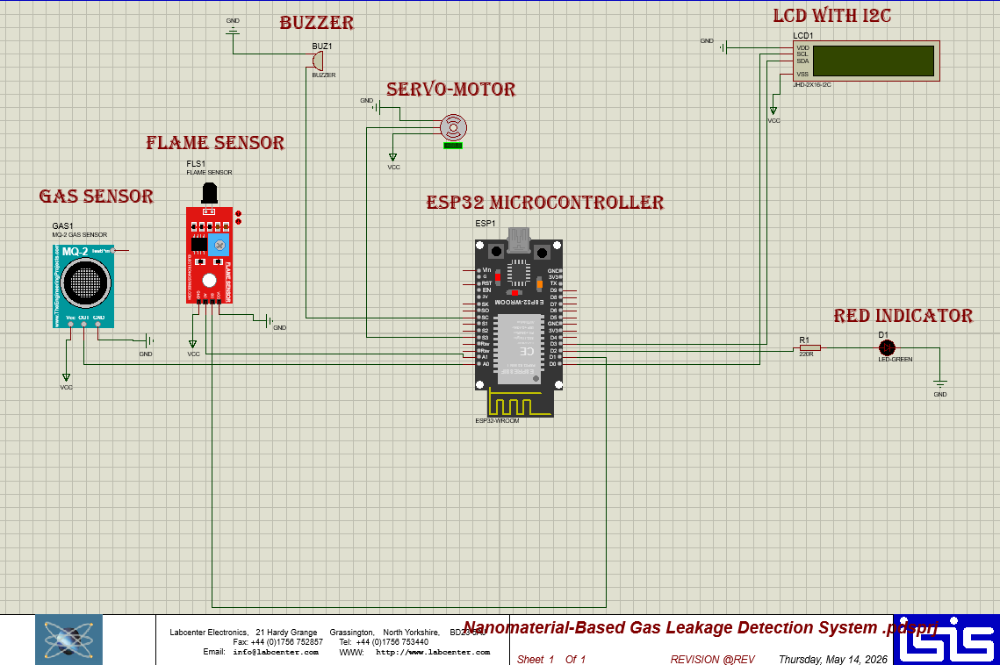
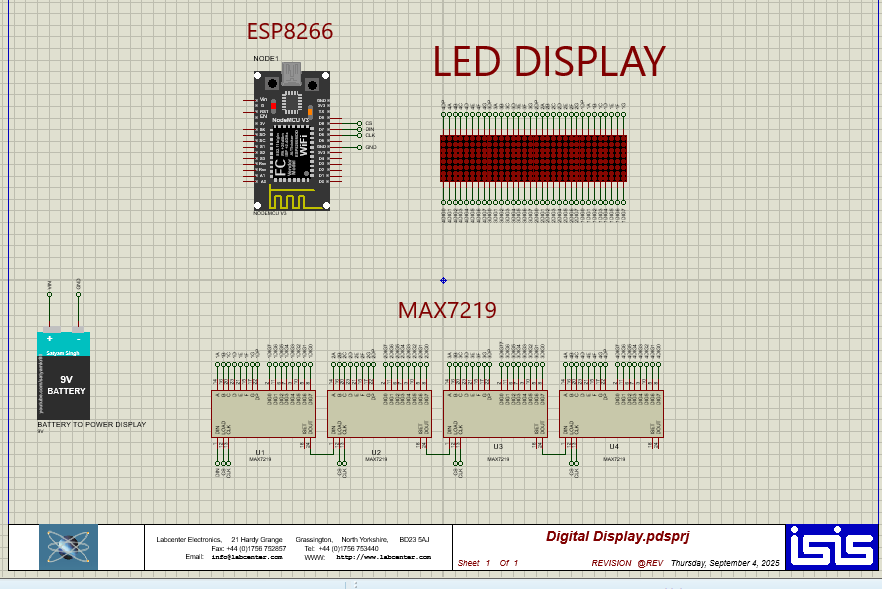
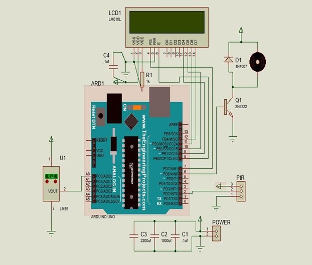
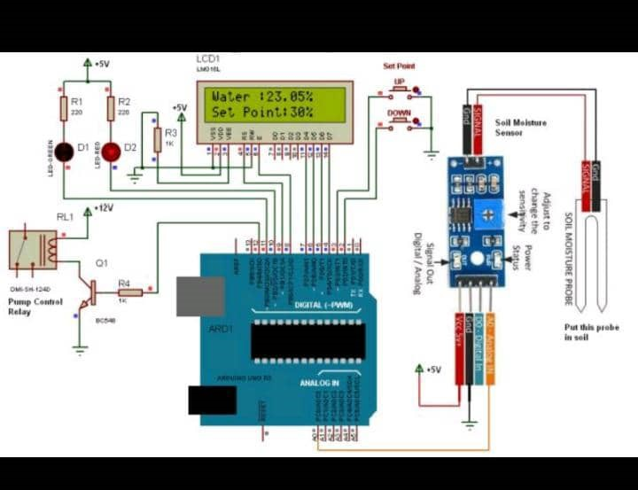
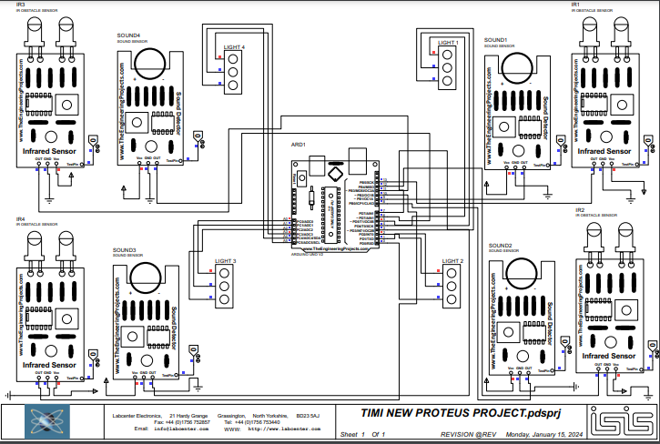
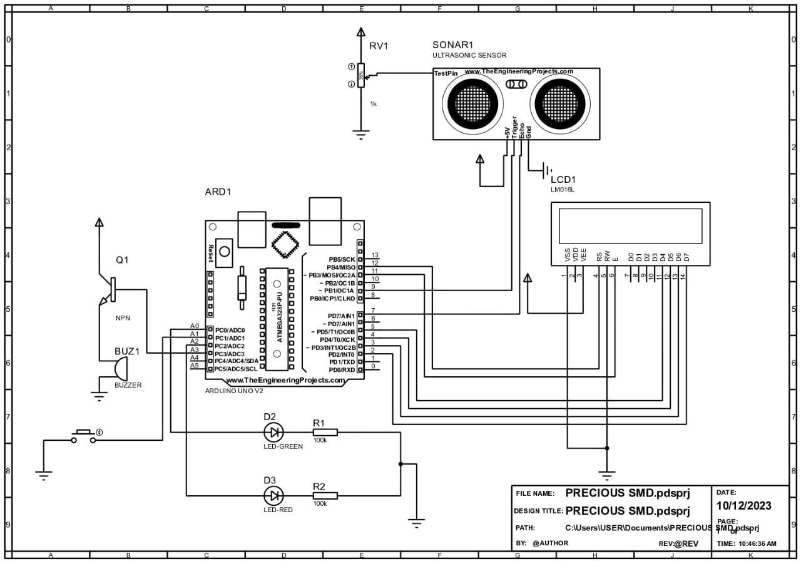

AI-Based Energy Monitoring System
Building a real-time power monitoring system using ESP32 and PZEM-004T sensors with AI-driven anomaly detection and cloud analytics. The system aims to surface power irregularities automatically and send alerts.
- Sensor integration under development
- Data logging working
- Dashboard completed

Smart Parking Slot Detection System
Designed an IR sensor-based parking detection system using Arduino Uno that reduced manual parking monitoring and provided real-time slot availability to users and operators.

IoT Health Monitoring System
A connected health monitoring platform that captures vital signs from embedded sensors and transmits data to the cloud for remote tracking, visualisation, and alerts.

Nanomaterial-Based Gas Leakage Detection System with IoT Monitoring
Design and implementation of a smart gas leakage detection system integrating nanomaterial-based sensors with IoT monitoring for real-time alerts and safety monitoring.

LED Matrix Web Scroller
Built an ESP32-powered scrolling LED matrix display controlled through a web interface, enabling real-time message updates from any browser over Wi-Fi without reflashing firmware.

Automatic Fan Controller using PIR Sensor
Designed and built an automatic fan control system using a PIR motion sensor to detect human presence and automatically switch the fan on or off, improving energy efficiency and reducing unnecessary power consumption.

Solar-Powered Automatic Irrigation System
Contributed to the development of a solar-powered automatic irrigation system using Arduino and soil moisture sensing to automate water distribution for farms, reducing water pump energy consumption by 25% during test conditions.

Density and Sound-Based Traffic Light System
Designed an adaptive traffic light control system using sensor fusion techniques that combined vehicle density detection and sound sensing to dynamically manage traffic flow and improve road efficiency in high-traffic conditions.

Implementation of a Speed Measurement System for Road Safety Personnel using Arduino Microcontroller
Final year research project designing a portable, low-cost speed measurement solution to support road safety enforcement. Built on an Arduino microcontroller with a radar sensor module and a real-time display unit for field officers.